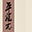

 The Last Soldier of the Ming Dynasty
Detalles
 |
|
| Tiempo de juego | No Jugado |
| Última actividad | Nunca |
| Añadido | 12/6/2024 15:14:27 |
| Modificado | 12/10/2024 6:54:43 |
| Estado de finalización | Not Played |
| Librería | Playnite |
| Fuente | 2TB DATOS |
| Plataforma | PC (Windows) |
| Fecha de lanzamiento | |
| Puntuación de la Comunidad | 77 |
| Puntuación de la Crítica | |
| Puntuación de usuario | |
| Género | Acción Aventura Indie Rol |
| Desarrollador | Circuit_Art |
| Editor | 2P Games |
| Característica | Compat. Total Con Mando Préstamo Familiar Un Jugador |
| Enlaces | Punto de encuentro Discusiones Guías Noticias Página de la tienda PCGamingWiki |
| Tag | 3D Acción Acción y aventura Artes marciales Aventura Combate Espadas Estilizados Física Hack and slash Históricos Indie Peleas callejeras Rol Rol de acción Un jugador |
Descripción
The Last Soldier of the Ming Dynasty is a 3D action game inspired by traditional Chinese landscape ink paintings.
You take on the role of a Qi army soldier, tasked with fighting back the Japanese pirate raids during the Ming Dynasty. After your unit's boat shipwrecks, you find yourself cast on an island controlled by the Wokou, Japanese pirates that have been terrorizing the Chinese coasts for decades. You are alone with your sword, the last soldier of the Ming Dynasty standing against the pirates – but your duty won't be fulfilled until your people's coasts are safe again.Explore the beautifully painted landscapes of Fuling Island to defeat the 5 pirate bosses, each with their own unique characteristics, experiencing the most intense traditional melee combat. Embrace the challenge of this hardcore action game, rich in historical charm and martial arts depth!

Fighting against Japanese pirates
The Last Soldier of the Ming Dynasty is set during the Jiajing period of the Ming Dynasty. At that time, rampant Japanese pirates plagued the southeastern coastal regions. General Qi Jiguang was tasked with combating these pirates; after successfully finishing his campaign, he headed north to Jizhou, pacifying internal rebellions in his path and guarding against external barbarians. But as the Qi's army moved north, the remnants of the defeated Japanese pirates gathered back its forces and conspired with other sea raiders from Fuling Island, readying to make a bloody comeback.As a member of the Qi's army stationed to guard the coastal regions, specifically tasked with pacifying the seas, you were patrolling the waters when a storm shipwrecked your boat – and you find yourself a castaway on the shores of Ryukyu Island, the only survivor of your unit. With your sword by your side, you walk into the depths of the Island, set on uncovering and dismantling the clandestine plots of the Japanese pirates.

Ink and wash painting world
The game's art is inspired by traditional Chinese ink and wash paintings. From the humblest blade of grass to the most majestic mountains of Fuling Island, each scene is beautifully painted in ink and wash. Its artistic design also draws inspiration from ancient Chinese paintings' character styles and proportions, providing players with a captivating visual experience.
Tactical melee with cold weapons
The Last Soldier of the Ming Dynasty will put your reflexes and warrior senses to the test. Its combat system is built upon three basic attack actions: stab, cleave, and sweep, which form the basis of both offense and defense. While executing these moves, it is crucial to discern the enemy's attacks simultaneously. You can deflect their attacks by accurately anticipating the enemy's actions. Stay calm in the midst of the storm while you ponder the enemy's every move, and you will remain undefeated in battle.
The game offers a variety of combat styles, ranging from close-quarters melee weapons to long-range bows and arrows. You can either block enemy attacks with your weapons or utilize evading maneuvers and counterattacks. The key to overcoming adversaries lies in swiftly switching between offense and defense, adeptly countering their moves. Only by mastering the art of adaptation and switching styles you will ultimately triumph over your foes.

Historical weaponry and armor
The game offers a variety of weapons and equipment for players to choose from. Each piece of weaponry is meticulously recreated to reflect its origins in real historical contexts.
You can also disarm enemies and utilize their weapon skills against them. Through diligent practice, mastering the techniques of your adversaries, and then applying them to your own weaponry, you will become even more formidable in combat.